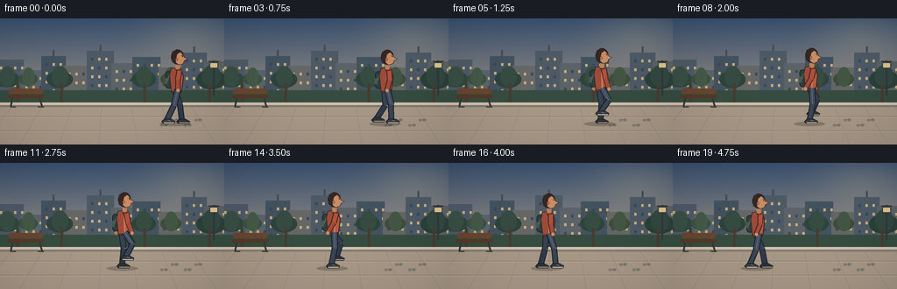
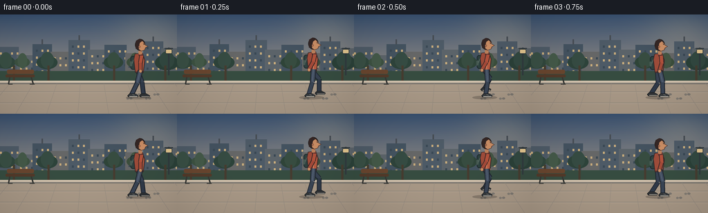

CODING AGENTS AS PIXEL WORLD MODELS
traex/GPT-5.6-Sol · motion_rationality_0033
点击播放 · 原生 RGB 像素
逐轮保存的候选
回放视频、检查图与代码变化。
每份候选均可单独播放。实际图片检查记录在下方工具轨迹中。
候选 01播放与检查图
点击播放 · 原生 RGB 像素


展开代码变化
--- 上一保存版本
+++ 本次保存版本
@@ -0,0 +1,298 @@
+from pathlib import Path
+import math
+import numpy as np
+from PIL import Image, ImageDraw, ImageFilter
+import artifact_io
+
+# Text-to-video procedural illustration: a cautious backward walk.
+W, H, N, FPS = 256, 144, 20, 4.0
+SS = 4
+GROUND = 119.0
+
+
+def sc(v):
+ return int(round(v * SS))
+
+
+def pts(seq):
+ return [(sc(x), sc(y)) for x, y in seq]
+
+
+def ellipse(draw, box, fill, outline=None, width=1):
+ draw.ellipse(tuple(sc(x) for x in box), fill=fill, outline=outline, width=sc(width) if outline else 1)
+
+
+def line(draw, seq, fill, width, joint="curve"):
+ draw.line(pts(seq), fill=fill, width=sc(width), joint=joint)
+
+
+def poly(draw, seq, fill, outline=None, width=1):
+ draw.polygon(pts(seq), fill=fill)
+ if outline:
+ draw.line(pts(seq + [seq[0]]), fill=outline, width=sc(width), joint="curve")
+
+
+def rounded(draw, box, radius, fill, outline=None, width=1):
+ draw.rounded_rectangle(tuple(sc(x) for x in box), radius=sc(radius), fill=fill,
+ outline=outline, width=sc(width) if outline else 1)
+
+
+def background():
+ """A warm, detailed urban park, kept fixed to make travel direction measurable."""
+ h, w = H * SS, W * SS
+ yy = np.linspace(0, 1, h)[:, None, None]
+ top = np.array([58, 82, 113], dtype=float)[None, None, :]
+ horizon = np.array([208, 179, 145], dtype=float)[None, None, :]
+ sky = top * (1 - yy) + horizon * yy
+ sky = np.broadcast_to(sky, (h, w, 3)).copy()
+ # soft sun glow, upper right
+ Y, X = np.mgrid[0:h, 0:w]
+ d2 = ((X / SS - 218) / 52) ** 2 + ((Y / SS - 25) / 38) ** 2
+ glow = np.exp(-d2)[..., None]
+ sky = sky * (1 - .15 * glow) + np.array([255, 224, 165]) * (.15 * glow)
+ im = Image.fromarray(np.uint8(np.clip(sky, 0, 255)), "RGB")
+ d = ImageDraw.Draw(im)
+
+ # Far skyline and atmospheric silhouettes.
+ buildings = [
+ (-5, 47, 27, 92), (24, 59, 48, 92), (47, 43, 75, 92),
+ (73, 54, 101, 92), (99, 37, 130, 92), (127, 51, 154, 92),
+ (151, 44, 183, 92), (181, 56, 210, 92), (207, 39, 236, 92), (233, 49, 263, 92)
+ ]
+ cols = [(78,91,103), (92,100,106), (68,83,96), (102,103,103)]
+ for i, b in enumerate(buildings):
+ d.rectangle(tuple(sc(v) for v in b), fill=cols[i % len(cols)])
+ # rooftop accents
+ if i in (2, 4, 8):
+ x0, y0, x1, _ = b
+ d.rectangle((sc((x0+x1)/2-1), sc(y0-7), sc((x0+x1)/2+1), sc(y0)), fill=(72,78,85))
+ # tiny warm windows
+ x0, y0, x1, _ = b
+ for wy in np.arange(y0 + 8, 84, 10):
+ for wx in np.arange(x0 + 5, x1 - 2, 8):
+ color = (203,174,125) if (int(wx+wy+i) % 3) else (57,72,84)
+ d.rectangle((sc(wx), sc(wy), sc(wx+2.4), sc(wy+3)), fill=color)
+
+ # distant hedge strip and tree canopies
+ d.rectangle((0, sc(82), sc(W), sc(100)), fill=(55,77,65))
+ for x, r, c in [(8,14,(50,72,61)), (32,11,(61,82,65)), (68,15,(46,68,59)),
+ (164,14,(48,69,57)), (195,12,(60,78,60)), (241,17,(43,65,57))]:
+ ellipse(d, (x-r, 68-r*.55, x+r, 68+r*.75), c)
+ ellipse(d, (x-r*.6, 61-r*.45, x+r*.65, 78), tuple(min(255, q+8) for q in c))
+ # trunks peeking through
+ for x in (20, 70, 165, 239):
+ d.rectangle((sc(x-1.5), sc(74), sc(x+1.5), sc(101)), fill=(70,61,49))
+
+ # rear curb, broad pedestrian paving and foreground vignette.
+ d.polygon(pts([(0,96),(256,96),(256,144),(0,144)]), fill=(169,153,135))
+ d.rectangle((0, sc(96), sc(W), sc(99)), fill=(211,195,174))
+ d.rectangle((0, sc(99), sc(W), sc(101)), fill=(128,123,115))
+ # perspective seams
+ for y in (112, 128):
+ d.line((0, sc(y), sc(W), sc(y)), fill=(144,136,126), width=sc(.7))
+ d.line((0, sc(y+1), sc(W), sc(y+1)), fill=(187,170,151), width=sc(.5))
+ for x_top in range(-20, 300, 34):
+ d.line((sc(x_top), sc(100), sc(128 + (x_top-128)*1.32), sc(144)),
+ fill=(148,139,128), width=sc(.55))
+
+ # Fixed trail of subtle right-facing shoeprints behind the left-moving walker.
+ for x, y, ang in [(226,116,0), (214,122,0), (199,116,0), (187,122,0)]:
+ # heel + toe aligned toward the right
+ ellipse(d, (x-4.2, y-1.5, x-.5, y+1.4), (130,124,116))
+ ellipse(d, (x, y-1.8, x+4.6, y+1.2), (124,119,112))
+
+ # bench and lamp as crisp stationary reference points.
+ # bench (far left, not overlapping walker)
+ rounded(d, (8,87,50,91), 1.5, (83,58,42))
+ rounded(d, (10,80,49,86), 2, (105,70,47))
+ line(d, [(14,91),(12,101)], (55,56,53), 2)
+ line(d, [(45,91),(48,101)], (55,56,53), 2)
+ line(d, [(12,101),(18,101)], (55,56,53), 1.2)
+ line(d, [(43,101),(50,101)], (55,56,53), 1.2)
+ # lamp on far right
+ line(d, [(244,88),(244,48)], (49,58,63), 2.2)
+ line(d, [(238,49),(250,49)], (49,58,63), 1.4)
+ rounded(d, (239,50,249,57), 2, (226,197,142), (51,60,64), 1)
+
+ return im
+
+
+BASE = background()
+
+
+def smoothstep(q):
+ return q*q*(3-2*q)
+
+
+def foot_cycle(t, offset):
+ """World-consistent backward gait: stance foot nearly anchors as torso travels left."""
+ period = 1.55
+ phase = (t / period + offset) % 1.0
+ stance = 0.62
+ if phase < stance:
+ q = phase / stance
+ local_x = -10.6 + 21.2*q # apparent backward plant -> rolls beneath torso
+ lift = 0.0
+ planted = True
+ else:
+ q = (phase - stance) / (1-stance)
+ local_x = 10.6 - 21.2*smoothstep(q)
+ lift = 9.2 * math.sin(math.pi*q) ** .82
+ planted = False
+ return local_x, lift, planted, phase
+
+
+def knee_point(hip, ankle, lift, planted, near=True):
+ """Stylized two-bone IK, knees bend toward the character's front (screen-right)."""
+ hx, hy = hip; ax, ay = ankle
+ mx, my = (hx+ax)/2, (hy+ay)/2
+ dx, dy = ax-hx, ay-hy
+ length = max(1.0, math.hypot(dx,dy))
+ bend = (2.0 if planted else 5.0 + .35*lift)
+ # right-facing anterior normal; mostly horizontal for a near-vertical leg
+ nx, ny = dy/length, -dx/length
+ return (mx + bend*nx, my + bend*ny)
+
+
+def draw_limb(draw, a, b, outer, inner, width):
+ # dark contour plus colored interior gives volume at tiny output size
+ line(draw, [a,b], outer, width+2.0)
+ line(draw, [a,b], inner, width)
+
+
+def draw_character(base, frame_index):
+ t = frame_index / FPS
+ # Unambiguously translates toward screen-left while profile faces screen-right.
+ cx = 201.0 - 22.0*t
+ _, _, _, ph0 = foot_cycle(t, 0.0)
+ bob = 1.15*math.cos(4*math.pi*(t/1.55) + .35)
+ hip_y = 80.0 + bob
+ shoulder_y = 57.0 + bob
+
+ layer = Image.new("RGBA", base.size, (0,0,0,0))
+ d = ImageDraw.Draw(layer)
+
+ # Moving cast shadow, darkest under support foot; sun is high/right.
+ ellipse(d, (cx-19, GROUND-1.2, cx+17, GROUND+4.0), (49,43,39,72))
+
+ legs = []
+ for off, near in ((0.5, False), (0.0, True)):
+ lx, lift, planted, phase = foot_cycle(t, off)
+ ankle = (cx + lx, GROUND - 3.2 - lift)
+ hip = (cx + (1.8 if near else -2.0), hip_y)
+ knee = knee_point(hip, ankle, lift, planted, near)
+ legs.append((near, hip, knee, ankle, planted, phase, lift))
+
+ # Far leg first, desaturated by occlusion.
+ near, hip, knee, ankle, planted, phase, lift = legs[0]
+ draw_limb(d, hip, knee, (30,36,47,255), (55,66,82,255), 5.1)
+ draw_limb(d, knee, ankle, (27,33,43,255), (48,58,73,255), 4.7)
+ # shoe points right (the body's facing direction) even while stepping backward left
+ ax, ay = ankle
+ poly(d, [(ax-3,ay-1),(ax+4,ay-1),(ax+9,ay+1.7),(ax+8,ay+4),(ax-4,ay+4),(ax-6,ay+2)],
+ (48,51,54,255), (30,33,35,255), .8)
+ line(d, [(ax-3,ay+3.3),(ax+8,ay+3.3)], (213,204,188,255), .8)
+
+ # Far arm swings opposite its corresponding leg.
+ arm_phase_far = 2*math.pi*((t/1.55 + .5) % 1)
+ far_hand_dx = -7.0*math.sin(arm_phase_far)
+ far_sh = (cx-2.5, shoulder_y+2)
+ far_hand = (cx+far_hand_dx-1, shoulder_y+23)
+ far_elbow = ((far_sh[0]+far_hand[0])/2 - 2, (far_sh[1]+far_hand[1])/2)
+ draw_limb(d, far_sh, far_elbow, (45,40,39,255), (121,66,53,255), 4.4)
+ draw_limb(d, far_elbow, far_hand, (45,40,39,255), (129,71,56,255), 4.0)
+ ellipse(d, (far_hand[0]-2.2,far_hand[1]-2,far_hand[0]+2.3,far_hand[1]+2.8), (180,124,91,255))
+
+ # Backpack on the left/back side is an extra orientation cue.
+ rounded(d, (cx-12.5, shoulder_y+2, cx-4.0, shoulder_y+22), 3.7,
+ (45,65,63,255), (30,40,42,255), 1)
+ line(d, [(cx-7,shoulder_y+4),(cx-11,shoulder_y+16)], (92,110,101,255), 1)
+ rounded(d, (cx-13,shoulder_y+10,cx-10,shoulder_y+17), 1, (72,91,84,255))
+
+ # Torso: front/chest protrudes right, body has a cautious forward-facing lean.
+ torso = [(cx-5.8,shoulder_y-1), (cx+4.8,shoulder_y-2.4),
+ (cx+8.2,shoulder_y+8), (cx+6.1,hip_y+3.5),
+ (cx-5.2,hip_y+3.2), (cx-7.6,shoulder_y+7)]
+ poly(d, torso, (159,76,58,255), (55,42,43,255), 1.1)
+ # warm jacket panel, hem, and zipper toward the right-facing chest
+ poly(d, [(cx+.4,shoulder_y-1.8),(cx+4.8,shoulder_y-2.2),(cx+7.2,shoulder_y+8),
+ (cx+5.3,hip_y+2.4),(cx+.7,hip_y+2.6)], (184,91,65,255))
+ line(d, [(cx+1.1,shoulder_y),(cx+2.0,hip_y+2)], (224,151,112,255), .75)
+ line(d, [(cx-5.5,hip_y+1.8),(cx+6.0,hip_y+1.8)], (67,46,45,255), 1)
+ # collar/neck
+ poly(d, [(cx-1.3,shoulder_y),(cx+4.5,shoulder_y-1),(cx+6,shoulder_y+3),
+ (cx+1.3,shoulder_y+5)], (95,50,45,255))
+ rounded(d, (cx-.7,shoulder_y-7,cx+4.3,shoulder_y), 1.5, (189,129,91,255))
+
+ # Near leg, brighter trouser highlights.
+ near, hip, knee, ankle, planted, phase, lift = legs[1]
+ draw_limb(d, hip, knee, (29,34,43,255), (66,78,96,255), 5.4)
+ line(d, [hip,knee], (99,112,130,255), .8)
+ draw_limb(d, knee, ankle, (27,32,40,255), (58,69,85,255), 4.8)
+ ax, ay = ankle
+ poly(d, [(ax-3,ay-1),(ax+4.5,ay-1),(ax+9.2,ay+1.5),(ax+8.5,ay+4),
+ (ax-4.2,ay+4),(ax-6,ay+2)], (57,61,64,255), (27,30,32,255), .85)
+ line(d, [(ax-3.5,ay+3.2),(ax+8.2,ay+3.2)], (225,216,199,255), .9)
+ # tiny lace marks enhance right-pointing toe read
+ line(d, [(ax+1,ay+.1),(ax+4,ay+1.3)], (208,203,191,255), .55)
+
+ # Near arm, strong alternating swing.
+ arm_phase = 2*math.pi*((t/1.55) % 1)
+ hand_dx = -8.0*math.sin(arm_phase)
+ sh = (cx+3.8, shoulder_y+1.5)
+ hand = (cx+hand_dx+2, shoulder_y+23.5)
+ elbow = ((sh[0]+hand[0])/2 + (2 if hand_dx<0 else -1), (sh[1]+hand[1])/2 - .5)
+ draw_limb(d, sh, elbow, (55,40,40,255), (178,82,60,255), 4.7)
+ draw_limb(d, elbow, hand, (55,40,40,255), (165,75,57,255), 4.2)
+ ellipse(d, (hand[0]-2.2,hand[1]-2,hand[0]+2.5,hand[1]+3), (202,143,101,255), (87,59,49,255), .6)
+
+ # Profile head faces RIGHT: rear hair left, forehead/nose/chin on right.
+ head_y = shoulder_y - 13.0
+ # hair mass/back of skull
+ ellipse(d, (cx-5.8,head_y-9.5,cx+9,head_y+7.5), (51,38,36,255), (35,31,31,255), .8)
+ # face silhouette with unmistakable nose projection to screen-right
+ face = [(cx-1.5,head_y-7.2),(cx+5.3,head_y-6.5),(cx+8.5,head_y-3.0),
+ (cx+9.0,head_y-.8),(cx+13.0,head_y+1.0),(cx+9.2,head_y+3.0),
+ (cx+8.0,head_y+6.4),(cx+3.0,head_y+8.0),(cx-.5,head_y+5.5)]
+ poly(d, face, (203,142,101,255), (68,47,42,255), .7)
+ # swept hair remains on the left/back
+ poly(d, [(cx-5.0,head_y-1),(cx-4.5,head_y-7),(cx+1,head_y-10),
+ (cx+5,head_y-7),(cx+1,head_y-4),(cx-.5,head_y+3),(cx-4.8,head_y+5)],
+ (53,39,37,255))
+ # ear, eye, brow and mouth all point right
+ ellipse(d, (cx-.8,head_y-.2,cx+2.1,head_y+3.2), (183,119,84,255), (109,70,57,255), .45)
+ ellipse(d, (cx+6.7,head_y-2.5,cx+7.7,head_y-1.4), (31,32,31,255))
+ line(d, [(cx+5.7,head_y-3.2),(cx+8.0,head_y-3.0)], (80,52,45,255), .55)
+ line(d, [(cx+8.5,head_y+4.1),(cx+10.2,head_y+3.8)], (114,61,54,255), .55)
+
+ # Small pale breath-like motion accents behind the retreating heel only during swing;
+ # restrained enough to remain natural, but helps direction at 4 fps.
+ if lift > 4:
+ alpha = int(55 * min(1, lift/8))
+ line(d, [(ax-8,ay+2),(ax-12,ay+3)], (238,224,202,alpha), .8)
+
+ # composite and gentle contact sharpening through supersampled downsample
+ comp = Image.alpha_composite(base.convert("RGBA"), layer)
+ return comp.convert("RGB")
+
+
+def generate():
+ frames = []
+ for i in range(N):
+ hi = draw_character(BASE.copy(), i)
+ frame = hi.resize((W,H), Image.Resampling.LANCZOS)
+ # subtle cinematic vignette, fixed across frames
+ arr = np.asarray(frame).astype(np.float32)
+ yy, xx = np.mgrid[0:H,0:W]
+ vig = 1.0 - .12*np.clip(((xx-W/2)/(W*.7))**2 + ((yy-H/2)/(H*.75))**2, 0, 1)
+ arr *= vig[...,None]
+ frames.append(np.uint8(np.clip(arr,0,255)))
+ return np.stack(frames, axis=0)
+
+
+if __name__ == "__main__":
+ case_dir = Path(__file__).resolve().parent
+ frames = generate()
+ assert frames.shape == (20,144,256,3) and frames.dtype == np.uint8
+ artifact_io.save(frames, case_dir)
+ print(f"saved {len(frames)} RGB frames; shape={frames.shape}; dtype={frames.dtype}")
可观测工具轨迹
实际执行的命令与返回图片。
命令 1exit 0
/bin/bash -lc "cat prompt.txt && printf '\\n--- GENERATION_RULES.md ---\\n' && cat GENERATION_RULES.md && printf '\\n--- task_spec.json ---\\n' && cat task_spec.json"
命令 2exit 0
/bin/bash -lc "find . -maxdepth 3 -type f -printf '%p\\n' | sort && printf '\\n--- tools ---\\n' && command -v ffmpeg || true && command -v python3 || true && command -v convert || true"
命令 3exit 0
/bin/bash -lc 'cat artifact_io.py'
命令 4exit 0
/bin/bash -lc "cat > generate.py <<'PY'
from pathlib import Path
import math
import numpy as np
from PIL import Image, ImageDraw, ImageFilter
import artifact_io
# Text-to-video procedural illustration: a cautious backward walk.
W, H, N, FPS = 256, 144, 20, 4.0
SS = 4
GROUND = 119.0
def sc(v):
return int(round(v * SS))
def pts(seq):
return [(sc(x), sc(y)) for x, y in seq]
def ellipse(draw, box, fill, outline=None, width=1):
draw.ellipse(tuple(sc(x) for x in box), fill=fill, outline=outline, width=sc(width) if outline else 1)
def line(draw, seq, fill, width, joint=\"curve\"):
draw.line(pts(seq), fill=fill, width=sc(width), joint=joint)
def poly(draw, seq, fill, outline=None, width=1):
draw.polygon(pts(seq), fill=fill)
if outline:
draw.line(pts(seq + [seq[0]]), fill=outline, width=sc(width), joint=\"curve\")
def rounded(draw, box, radius, fill, outline=None, width=1):
draw.rounded_rectangle(tuple(sc(x) for x in box), radius=sc(radius), fill=fill,
outline=outline, width=sc(width) if outline else 1)
def background():
\"\"\"A warm, detailed urban park, kept fixed to make travel direction measurable.\"\"\"
h, w = H * SS, W * SS
yy = np.linspace(0, 1, h)[:, None, None]
top = np.array([58, 82, 113], dtype=float)[None, None, :]
horizon = np.array([208, 179, 145], dtype=float)[None, None, :]
sky = top * (1 - yy) + horizon * yy
sky = np.broadcast_to(sky, (h, w, 3)).copy()
# soft sun glow, upper right
Y, X = np.mgrid[0:h, 0:w]
d2 = ((X / SS - 218) / 52) ** 2 + ((Y / SS - 25) / 38) ** 2
glow = np.exp(-d2)[..., None]
sky = sky * (1 - .15 * glow) + np.array([255, 224, 165]) * (.15 * glow)
im = Image.fromarray(np.uint8(np.clip(sky, 0, 255)), \"RGB\")
d = ImageDraw.Draw(im)
# Far skyline and atmospheric silhouettes.
buildings = [
(-5, 47, 27, 92), (24, 59, 48, 92), (47, 43, 75, 92),
(73, 54, 101, 92), (99, 37, 130, 92), (127, 51, 154, 92),
(151, 44, 183, 92), (181, 56, 210, 92), (207, 39, 236, 92), (233, 49, 263, 92)
]
cols = [(78,91,103), (92,100,106), (68,83,96), (102,103,103)]
for i, b in enumerate(buildings):
d.rectangle(tuple(sc(v) for v in b), fill=cols[i % len(cols)])
# rooftop accents
if i in (2, 4, 8):
x0, y0, x1, _ = b
d.rectangle((sc((x0+x1)/2-1), sc(y0-7), sc((x0+x1)/2+1), sc(y0)), fill=(72,78,85))
# tiny warm windows
x0, y0, x1, _ = b
for wy in np.arange(y0 + 8, 84, 10):
for wx in np.arange(x0 + 5, x1 - 2, 8):
color = (203,174,125) if (int(wx+wy+i) % 3) else (57,72,84)
d.rectangle((sc(wx), sc(wy), sc(wx+2.4), sc(wy+3)), fill=color)
# distant hedge strip and tree canopies
d.rectangle((0, sc(82), sc(W), sc(100)), fill=(55,77,65))
for x, r, c in [(8,14,(50,72,61)), (32,11,(61,82,65)), (68,15,(46,68,59)),
(164,14,(48,69,57)), (195,12,(60,78,60)), (241,17,(43,65,57))]:
ellipse(d, (x-r, 68-r*.55, x+r, 68+r*.75), c)
ellipse(d, (x-r*.6, 61-r*.45, x+r*.65, 78), tuple(min(255, q+8) for q in c))
# trunks peeking through
for x in (20, 70, 165, 239):
d.rectangle((sc(x-1.5), sc(74), sc(x+1.5), sc(101)), fill=(70,61,49))
# rear curb, broad pedestrian paving and foreground vignette.
d.polygon(pts([(0,96),(256,96),(256,144),(0,144)]), fill=(169,153,135))
d.rectangle((0, sc(96), sc(W), sc(99)), fill=(211,195,174))
d.rectangle((0, sc(99), sc(W), sc(101)), fill=(128,123,115))
# perspective seams
for y in (112, 128):
d.line((0, sc(y), sc(W), sc(y)), fill=(144,136,126), width=sc(.7))
d.line((0, sc(y+1), sc(W), sc(y+1)), fill=(187,170,151), width=sc(.5))
for x_top in range(-20, 300, 34):
d.line((sc(x_top), sc(100), sc(128 + (x_top-128)*1.32), sc(144)),
fill=(148,139,128), width=sc(.55))
# Fixed trail of subtle right-facing shoeprints behind the left-moving walker.
for x, y, ang in [(226,116,0), (214,122,0), (199,116,0), (187,122,0)]:
# heel + toe aligned toward the right
ellipse(d, (x-4.2, y-1.5, x-.5, y+1.4), (130,124,116))
ellipse(d, (x, y-1.8, x+4.6, y+1.2), (124,119,112))
# bench and lamp as crisp stationary reference points.
# bench (far left, not overlapping walker)
rounded(d, (8,87,50,91), 1.5, (83,58,42))
rounded(d, (10,80,49,86), 2, (105,70,47))
line(d, [(14,91),(12,101)], (55,56,53), 2)
line(d, [(45,91),(48,101)], (55,56,53), 2)
line(d, [(12,101),(18,101)], (55,56,53), 1.2)
line(d, [(43,101),(50,101)], (55,56,53), 1.2)
# lamp on far right
line(d, [(244,88),(244,48)], (49,58,63), 2.2)
line(d, [(238,49),(250,49)], (49,58,63), 1.4)
rounded(d, (239,50,249,57), 2, (226,197,142), (51,60,64), 1)
return im
BASE = background()
def smoothstep(q):
return q*q*(3-2*q)
def foot_cycle(t, offset):
\"\"\"World-consistent backward gait: stance foot nearly anchors as torso travels left.\"\"\"
period = 1.55
phase = (t / period + offset) % 1.0
stance = 0.62
if phase < stance:
q = phase / stance
local_x = -10.6 + 21.2*q # apparent backward plant -> rolls beneath torso
lift = 0.0
planted = True
else:
q = (phase - stance) / (1-stance)
local_x = 10.6 - 21.2*smoothstep(q)
lift = 9.2 * math.sin(math.pi*q) ** .82
planted = False
return local_x, lift, planted, phase
def knee_point(hip, ankle, lift, planted, near=True):
\"\"\"Stylized two-bone IK, knees bend toward the character's front (screen-right).\"\"\"
hx, hy = hip; ax, ay = ankle
mx, my = (hx+ax)/2, (hy+ay)/2
dx, dy = ax-hx, ay-hy
length = max(1.0, math.hypot(dx,dy))
bend = (2.0 if planted else 5.0 + .35*lift)
# right-facing anterior normal; mostly horizontal for a near-vertical leg
nx, ny = dy/length, -dx/length
return (mx + bend*nx, my + bend*ny)
def draw_limb(draw, a, b, outer, inner, width):
# dark contour plus colored interior gives volume at tiny output size
line(draw, [a,b], outer, width+2.0)
line(draw, [a,b], inner, width)
def draw_character(base, frame_index):
t = frame_index / FPS
# Unambiguously translates toward screen-left while profile faces screen-right.
cx = 201.0 - 22.0*t
_, _, _, ph0 = foot_cycle(t, 0.0)
bob = 1.15*math.cos(4*math.pi*(t/1.55) + .35)
hip_y = 80.0 + bob
shoulder_y = 57.0 + bob
layer = Image.new(\"RGBA\", base.size, (0,0,0,0))
d = ImageDraw.Draw(layer)
# Moving cast shadow, darkest under support foot; sun is high/right.
ellipse(d, (cx-19, GROUND-1.2, cx+17, GROUND+4.0), (49,43,39,72))
legs = []
for off, near in ((0.5, False), (0.0, True)):
lx, lift, planted, phase = foot_cycle(t, off)
ankle = (cx + lx, GROUND - 3.2 - lift)
hip = (cx + (1.8 if near else -2.0), hip_y)
knee = knee_point(hip, ankle, lift, planted, near)
legs.append((near, hip, knee, ankle, planted, phase, lift))
# Far leg first, desaturated by occlusion.
near, hip, knee, ankle, planted, phase, lift = legs[0]
draw_limb(d, hip, knee, (30,36,47,255), (55,66,82,255), 5.1)
draw_limb(d, knee, ankle, (27,33,43,255), (48,58,73,255), 4.7)
# shoe points right (the body's facing direction) even while stepping backward left
ax, ay = ankle
poly(d, [(ax-3,ay-1),(ax+4,ay-1),(ax+9,ay+1.7),(ax+8,ay+4),(ax-4,ay+4),(ax-6,ay+2)],
(48,51,54,255), (30,33,35,255), .8)
line(d, [(ax-3,ay+3.3),(ax+8,ay+3.3)], (213,204,188,255), .8)
# Far arm swings opposite its corresponding leg.
arm_phase_far = 2*math.pi*((t/1.55 + .5) % 1)
far_hand_dx = -7.0*math.sin(arm_phase_far)
far_sh = (cx-2.5, shoulder_y+2)
far_hand = (cx+far_hand_dx-1, shoulder_y+23)
far_elbow = ((far_sh[0]+far_hand[0])/2 - 2, (far_sh[1]+far_hand[1])/2)
draw_limb(d, far_sh, far_elbow, (45,40,39,255), (121,66,53,255), 4.4)
draw_limb(d, far_elbow, far_hand, (45,40,39,255), (129,71,56,255), 4.0)
ellipse(d, (far_hand[0]-2.2,far_hand[1]-2,far_hand[0]+2.3,far_hand[1]+2.8), (180,124,91,255))
# Backpack on the left/back side is an extra orientation cue.
rounded(d, (cx-12.5, shoulder_y+2, cx-4.0, shoulder_y+22), 3.7,
(45,65,63,255), (30,40,42,255), 1)
line(d, [(cx-7,shoulder_y+4),(cx-11,shoulder_y+16)], (92,110,101,255), 1)
rounded(d, (cx-13,shoulder_y+10,cx-10,shoulder_y+17), 1, (72,91,84,255))
# Torso: front/chest protrudes right, body has a cautious forward-facing lean.
torso = [(cx-5.8,shoulder_y-1), (cx+4.8,shoulder_y-2.4),
(cx+8.2,shoulder_y+8), (cx+6.1,hip_y+3.5),
(cx-5.2,hip_y+3.2), (cx-7.6,shoulder_y+7)]
poly(d, torso, (159,76,58,255), (55,42,43,255), 1.1)
# warm jacket panel, hem, and zipper toward the right-facing chest
poly(d, [(cx+.4,shoulder_y-1.8),(cx+4.8,shoulder_y-2.2),(cx+7.2,shoulder_y+8),
(cx+5.3,hip_y+2.4),(cx+.7,hip_y+2.6)], (184,91,65,255))
line(d, [(cx+1.1,shoulder_y),(cx+2.0,hip_y+2)], (224,151,112,255), .75)
line(d, [(cx-5.5,hip_y+1.8),(cx+6.0,hip_y+1.8)], (67,46,45,255), 1)
# collar/neck
poly(d, [(cx-1.3,shoulder_y),(cx+4.5,shoulder_y-1),(cx+6,shoulder_y+3),
(cx+1.3,shoulder_y+5)], (95,50,45,255))
rounded(d, (cx-.7,shoulder_y-7,cx+4.3,shoulder_y), 1.5, (189,129,91,255))
# Near leg, brighter trouser highlights.
near, hip, knee, ankle, planted, phase, lift = legs[1]
draw_limb(d, hip, knee, (29,34,43,255), (66,78,96,255), 5.4)
line(d, [hip,knee], (99,112,130,255), .8)
draw_limb(d, knee, ankle, (27,32,40,255), (58,69,85,255), 4.8)
ax, ay = ankle
poly(d, [(ax-3,ay-1),(ax+4.5,ay-1),(ax+9.2,ay+1.5),(ax+8.5,ay+4),
(ax-4.2,ay+4),(ax-6,ay+2)], (57,61,64,255), (27,30,32,255), .85)
line(d, [(ax-3.5,ay+3.2),(ax+8.2,ay+3.2)], (225,216,199,255), .9)
# tiny lace marks enhance right-pointing toe read
line(d, [(ax+1,ay+.1),(ax+4,ay+1.3)], (208,203,191,255), .55)
# Near arm, strong alternating swing.
arm_phase = 2*math.pi*((t/1.55) % 1)
hand_dx = -8.0*math.sin(arm_phase)
sh = (cx+3.8, shoulder_y+1.5)
hand = (cx+hand_dx+2, shoulder_y+23.5)
elbow = ((sh[0]+hand[0])/2 + (2 if hand_dx<0 else -1), (sh[1]+hand[1])/2 - .5)
draw_limb(d, sh, elbow, (55,40,40,255), (178,82,60,255), 4.7)
draw_limb(d, elbow, hand, (55,40,40,255), (165,75,57,255), 4.2)
ellipse(d, (hand[0]-2.2,hand[1]-2,hand[0]+2.5,hand[1]+3), (202,143,101,255), (87,59,49,255), .6)
# Profile head faces RIGHT: rear hair left, forehead/nose/chin on right.
head_y = shoulder_y - 13.0
# hair mass/back of skull
ellipse(d, (cx-5.8,head_y-9.5,cx+9,head_y+7.5), (51,38,36,255), (35,31,31,255), .8)
# face silhouette with unmistakable nose projection to screen-right
face = [(cx-1.5,head_y-7.2),(cx+5.3,head_y-6.5),(cx+8.5,head_y-3.0),
(cx+9.0,head_y-.8),(cx+13.0,head_y+1.0),(cx+9.2,head_y+3.0),
(cx+8.0,head_y+6.4),(cx+3.0,head_y+8.0),(cx-.5,head_y+5.5)]
poly(d, face, (203,142,101,255), (68,47,42,255), .7)
# swept hair remains on the left/back
poly(d, [(cx-5.0,head_y-1),(cx-4.5,head_y-7),(cx+1,head_y-10),
(cx+5,head_y-7),(cx+1,head_y-4),(cx-.5,head_y+3),(cx-4.8,head_y+5)],
(53,39,37,255))
# ear, eye, brow and mouth all point right
ellipse(d, (cx-.8,head_y-.2,cx+2.1,head_y+3.2), (183,119,84,255), (109,70,57,255), .45)
ellipse(d, (cx+6.7,head_y-2.5,cx+7.7,head_y-1.4), (31,32,31,255))
line(d, [(cx+5.7,head_y-3.2),(cx+8.0,head_y-3.0)], (80,52,45,255), .55)
line(d, [(cx+8.5,head_y+4.1),(cx+10.2,head_y+3.8)], (114,61,54,255), .55)
# Small pale breath-like motion accents behind the retreating heel only during swing;
# restrained enough to remain natural, but helps direction at 4 fps.
if lift > 4:
alpha = int(55 * min(1, lift/8))
line(d, [(ax-8,ay+2),(ax-12,ay+3)], (238,224,202,alpha), .8)
# composite and gentle contact sharpening through supersampled downsample
comp = Image.alpha_composite(base.convert(\"RGBA\"), layer)
return comp.convert(\"RGB\")
def generate():
frames = []
for i in range(N):
hi = draw_character(BASE.copy(), i)
frame = hi.resize((W,H), Image.Resampling.LANCZOS)
# subtle cinematic vignette, fixed across frames
arr = np.asarray(frame).astype(np.float32)
yy, xx = np.mgrid[0:H,0:W]
vig = 1.0 - .12*np.clip(((xx-W/2)/(W*.7))**2 + ((yy-H/2)/(H*.75))**2, 0, 1)
arr *= vig[...,None]
frames.append(np.uint8(np.clip(arr,0,255)))
return np.stack(frames, axis=0)
if __name__ == \"__main__\":
case_dir = Path(__file__).resolve().parent
frames = generate()
assert frames.shape == (20,144,256,3) and frames.dtype == np.uint8
artifact_io.save(frames, case_dir)
print(f\"saved {len(frames)} RGB frames; shape={frames.shape}; dtype={frames.dtype}\")
PY
python3 generate.py
python3 - <<'PY'
import numpy as np
from PIL import Image
z=np.load('pixels.npz')['pixels']
print('pixels',z.shape,z.dtype,'range',z.min(),z.max())
for f in ['inspection.png','transition_check.png','index.html','frames/00.png','frames/19.png']:
import os
print(f, os.path.getsize(f))
PY"命令 5exit 0
/bin/bash -lc "python3 - <<'PY'
import generate, numpy as np
from PIL import Image
F=generate.generate()
assert F.shape==(20,144,256,3) and F.dtype==np.uint8
# Build the exact fixed, vignetted background for foreground localization.
b=np.asarray(generate.BASE.resize((256,144),Image.Resampling.LANCZOS)).astype(np.float32)
y,x=np.mgrid[0:144,0:256]
v=1.0-.12*np.clip(((x-128)/(256*.7))**2+((y-72)/(144*.75))**2,0,1)
b=np.uint8(np.clip(b*v[...,None],0,255))
cent=[]; boxes=[]
for i,f in enumerate(F):
delta=np.max(np.abs(f.astype(int)-b.astype(int)),axis=2)
yy,xx=np.where(delta>18)
# body localization excludes cast shadow / feet and rare antialiasing
body=(delta>18)&(y<117)&(x>60)
by,bx=np.where(body)
cent.append(float(np.mean(bx)))
boxes.append((int(xx.min()),int(yy.min()),int(xx.max()),int(yy.max())))
changes=[float(np.mean(np.abs(F[i].astype(float)-F[i-1].astype(float)))) for i in range(1,20)]
print('body center x:', ', '.join(f'{q:.1f}' for q in cent))
print('overall center displacement:',round(cent[-1]-cent[0],1),'px (negative=left)')
print('foreground bboxes first/last:',boxes[0],boxes[-1])
print('adjacent MAD min/mean/max:',round(min(changes),3),round(np.mean(changes),3),round(max(changes),3))
print('duplicate adjacent frames:',sum(np.array(changes)==0))
# Verify expected kinematics analytically: stance foot world-speed nearly zero.
period=1.55
stance_local_speed=21.2/(.62*period)
print('torso speed=-22.000 px/s; stance-foot cancellation local speed=',round(stance_local_speed,3),
'; net=',round(stance_local_speed-22,3),'px/s')
# Verify exported images.
for i in range(20):
im=Image.open(f'frames/{i:02}.png')
assert im.mode=='RGB' and im.size==(256,144)
print('all exported PNGs: RGB 256x144')
PY
printf '\\nArtifacts:\\n'
find . -maxdepth 2 -type f -printf '%p %s bytes\\n' | sort
printf '\\nGit diff/stat:\\n'
git status --short 2>/dev/null || true"保存候选 1 份；完成命令 5 次；可验证图片返回 0 张。原始 API 响应与完整日志保留在本地。